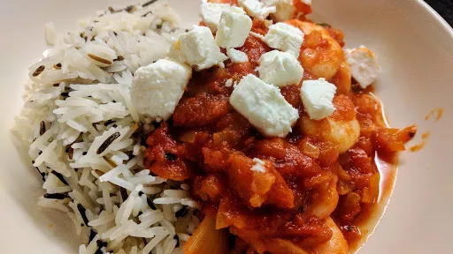

Prawns with tomato & feta

Servings: 4
Total: 20 mins
Ingredients
- 2 tbsp olive oil
- 2 onions, finely chopped
- 2x 400 g cans chopped tomatoes
- pinch of sugar
- 350 g large cooked peeled prawns
- 100 g feta
- rice or pasta , to serve
- 3 tbsp chopped parsley leaves
Instructions
- Heat the
oil2 tbsp
in a frying pan, add the onions2
and fry gently for about 7 minutes until softened and light brown. Add the tomatoes2x 400 g cans
and sugarpinch
, and simmer for 5 minutes.
- Throw in the
prawns350 g
, season and cook gently for 5 minutes until they are thoroughly hot.
- Serve the
prawns350 g
spooned over some rice or pasta. Crumble over the feta100 g
and sprinkle with chopped parsley3 tbsp
.
-
kcal
186
-
fat
6 g
-
saturates
3 g
-
carbs
11 g
-
sugar
9 g
-
fibre
3 g
-
protein
22 g
-
salt
1.54 g
BBC Good Food: Low-fat Feasts
Short Link
Long Link